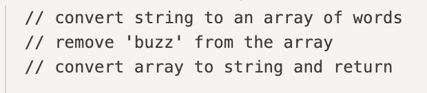
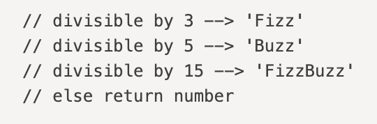
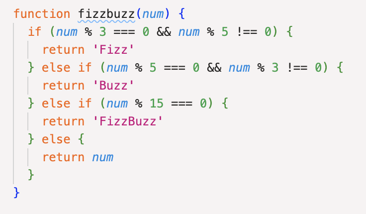
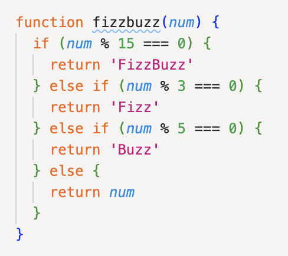

July 7, 2023
Problem Solving
This week we were given a bunch of JavaScript Kata challenges to solve. 'Kata' is a term that originates in martial arts and refers to a series of repetitive challenges used to master a certain skill. Solving these kata challenges has helped me to hone my problem solving methods.
A time I was blocked by a simple problem:
I experienced feeling blocked when I was solving the deBee Kata. This challenge involved writing a javascript program that takes a string and case insensitively filters out the word 'buzz' and returns the string. I started by solving the problem using pseudocode:

Converting the first and last step of my pseudocode into code was easy
as I knew I could use split() and join() to
transition between strings and arrays. Knowing how to filter out the
word buzz was a bit more tricky so I resorted to using google which
gave me instructions for using the filter() method. I
combined these three methods and I had a working function:
However, my function was only filtering out exact matches for 'buzz'.
I needed to find a way to filter out all variations of the word buzz.
I knew that the toLowerCase method existed so I incorporated this into
my filter, however my program was continuously failing the tests. It
got to the point where I was getting very frustrated because i thought
I had done everything right yet my solution was still not working, so
I decided it would be best to take a break and solve the problem with
fresh eyes. I came back and revisited my function and that's when I
finally realised the mistake I had made... I forgot to include the
brackets after
toLowerCase so it wasn't acting as a function. Once I
added the brackets, my program passed all the tests and the challenge
was solved.
I felt a sense of relief that the I had successfully solved the kata, however, I simultaneously felt like a huge idiot for getting so frustrated after making such a simple mistake. This situation definitely taught me the importance of carefully proofreading my code and making sure to get my syntax right.
A time I elegantly solved a problem:
The 'FizzBuzz' kata required me to write a function that took a number and returned that number, unless it was divisible by 3, 5 or 15 in which case the program would return 'Fizz', 'Buzz' or 'FizzBuzz' respectively. I immediately saw this problem and thought that this would be a perfect opportunity to use conditional statements. I also remembered from last weeks javascript problem solving session that I could use the remainder operator. I first tackled the program by using pseudocode:
Then I replaced each section of my pseudocode with real code. During which I was careful to make sure that I wasn't returning 'Buzz' or 'Fizz' for numbers that are divisible by 15:
Once I confirmed that my function was working I decided to refactor my code. I realised that due to the synchronous nature of javascript I could reorder my conditional statements and remove the need for the '&&' statements. Which lead my final code to look like this:
After I had successfully completed this challenge I felt a sense of pride as it finally felt like I was making progress with my problem solving skills.
Using different problem solving techniques:
Through solving the javascript kata I have realised that my favourite problem solving techniques are:
- pseudocode
- console.logging
- googling
- reading error messages
- trying something
- improving my process with reflection
Problem solving techniques I feel less confident about:
- asking peers for help
- asking coaches for help
- rubber-ducky method
This weeks problem solving sessions has made it obvious to me that the techniques I am most reluctant to use is asking for help. This reluctance stems from a stubbornness to be able to solve all of my own problems and also a fear of being labeled as dumb if i am asking for help on a very simple problem. In future I am going to work on overcoming this reluctance by asking for help sooner rather than later.